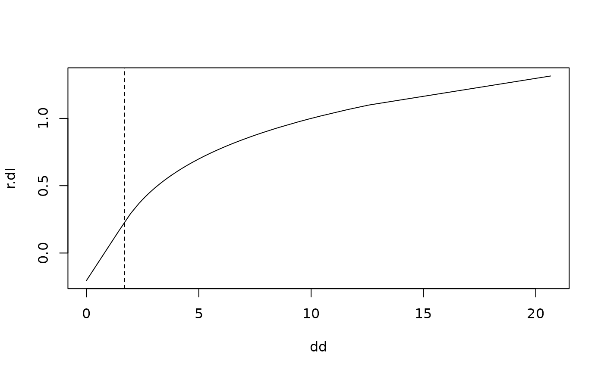

LogSt.RdTransforms the data by a log transformation, modifying small and zero observations such that the transformation is linear for \(x <= threshold\) and logarithmic for x > threshold. So the transformation yields finite values and is continuously differentiable.
LogSt(x, base = 10, calib = x, threshold = NULL, mult = 1) LogStInv(x, base = NULL, threshold = NULL)
| x | a vector or matrix of data, which is to be transformed |
|---|---|
| base | a positive or complex number: the base with respect to which logarithms are computed. Defaults to 10. Use=exp(1) for natural log. |
| calib | a vector or matrix of data used to calibrate the transformation(s), i.e., to determine the constant \(c\) needed |
| threshold | constant \(c\) that determines the transformation. The inverse function |
| mult | a tuning constant affecting the transformation of small values, see |
In order to avoid \(log(x) = -\infty\) for \(x=0\) in log-transformations there's often a constant added to the variable before taking the \(log\). This is not always a pleasable strategy.
The function
LogSt handles this problem based on the following ideas:
The modification should only affect the values for "small" arguments.
What "small" is should be determined in connection with the non-zero values of the original variable, since it should behave well (be equivariant) with respect to a change in the "unit of measurement".
The function must remain monotone, and it should remain (weakly) convex.
These criteria are implemented here as follows: The shape is determined by a threshold \(c\) at which - coming from above - the log function switches to a linear function with the same slope at this point.
This is obtained by
$$g(x) = \left\{\begin{array}{ll} log_{10}(x) &\textup{for }x \ge c\\ log_{10}(c) - \frac{c - x}{c \cdot log(10)} &\textup{for } x < c \end{array}\right. $$
Small values are determined by the threshold \(c\). If not given by the argument threshold, it is determined by the quartiles \(q_1\) and \(q_3\) of the non-zero data as those smaller than \(c = \frac{q_1^{1+r}}{q_3^r}\) where \(r\) can be set by the argument mult.
The rationale is, that, for lognormal data, this constant identifies 2 percent of the data as small.
Beyond this limit, the transformation continues linear with the derivative of the log curve at this point.
Another idea for choosing the threshold \(c\) was: median(x) / (median(x)/quantile(x, 0.25))^2.9)
The function chooses \(log_{10}\) rather than natural logs by default because they can be backtransformed relatively easily in mind.
A generalized log (see: Rocke 2003) can be calculated in order to stabilize the variance as:
function (x, a) { return(log((x + sqrt(x^2 + a^2)) / 2)) }
the transformed data. The value \(c\) used for the transformation and needed for inverse transformation is returned as attr(.,"threshold") and the used base as attr(.,"base").
Werner A. Stahel, ETH Zurich
slight modifications Andri Signorell <andri@signorell.net>
Rocke, D M, Durbin B (2003): Approximate variance-stabilizing transformations for gene-expression microarray data, Bioinformatics. 22;19(8):966-72.
dd <- c(seq(0,1,0.1), 5 * 10^rnorm(100, 0, 0.2)) dd <- sort(dd) r.dl <- LogSt(dd) plot(dd, r.dl, type="l")#> [1] 4.440892e-16 0.000000e+00 0.000000e+00 0.000000e+00 0.000000e+00 #> [6] 0.000000e+00 -1.776357e-15 0.000000e+00 0.000000e+00 0.000000e+00 #> [11] 0.000000e+00 0.000000e+00 8.881784e-16 0.000000e+00 0.000000e+00 #> [16] 5.551115e-17 8.881784e-16 0.000000e+00 0.000000e+00 0.000000e+00 #> [21] 0.000000e+00 -8.881784e-16 0.000000e+00 0.000000e+00 0.000000e+00 #> [26] 0.000000e+00 0.000000e+00 0.000000e+00 0.000000e+00 4.440892e-16 #> [31] 0.000000e+00 0.000000e+00 0.000000e+00 0.000000e+00 0.000000e+00 #> [36] 0.000000e+00 0.000000e+00 8.881784e-16 0.000000e+00 0.000000e+00 #> [41] 0.000000e+00 0.000000e+00 0.000000e+00 0.000000e+00 0.000000e+00 #> [46] 0.000000e+00 0.000000e+00 0.000000e+00 0.000000e+00 -8.881784e-16 #> [51] 0.000000e+00 0.000000e+00 8.881784e-16 0.000000e+00 0.000000e+00 #> [56] 0.000000e+00 0.000000e+00 0.000000e+00 0.000000e+00 0.000000e+00 #> [61] 0.000000e+00 0.000000e+00 -4.440892e-16 0.000000e+00 0.000000e+00 #> [66] 0.000000e+00 0.000000e+00 0.000000e+00 0.000000e+00 0.000000e+00 #> [71] 8.881784e-16 0.000000e+00 0.000000e+00 0.000000e+00 0.000000e+00 #> [76] 0.000000e+00 -8.881784e-16 1.387779e-17 0.000000e+00 0.000000e+00 #> [81] 0.000000e+00 -1.387779e-17 0.000000e+00 0.000000e+00 0.000000e+00 #> [86] 0.000000e+00 0.000000e+00 0.000000e+00 0.000000e+00 -1.776357e-15 #> [91] 0.000000e+00 0.000000e+00 0.000000e+00 0.000000e+00 0.000000e+00 #> [96] 0.000000e+00 0.000000e+00 -4.440892e-16 0.000000e+00 0.000000e+00